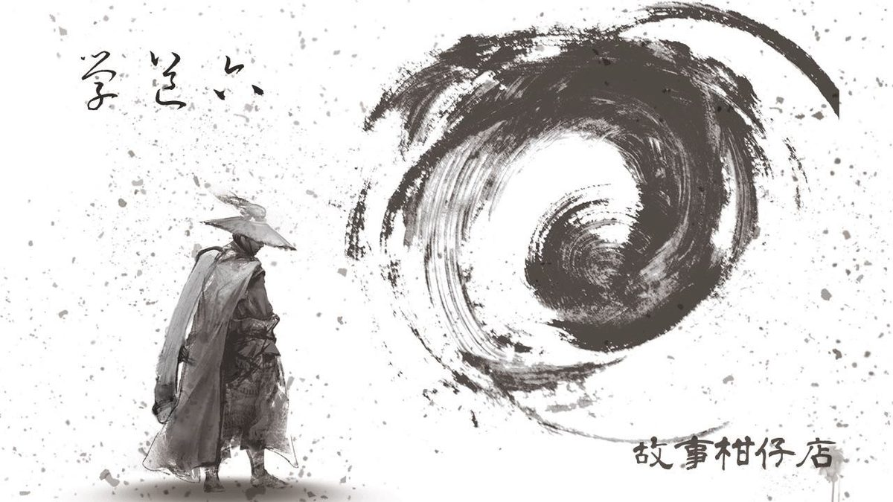

玄墨行者．學道（六）

當空皓月升至西北四十五度角，便悄悄映上湖面。上天下水，兩方有月，盈盈缺缺。
漆黑湖面像落下了顆銀球，映得湖邊林子微微明亮，也照清了湖邊人影。
天璣端坐，捏著根圓柏樹枝充當釣竿，筆直釣線沉入水中，探進黑暗湖心。他最喜歡這個時辰，雙月伴影隻。
深夜的湖邊，青草混雜著露水，幽幽散發枯敗又蓬勃的氣味。北斗七星盡責高掛天際，不遠處一大一小妖星，青藍光芒一明一滅。
所以他是如此敬畏自然。凡間任何風吹草動，天地總是先有了預兆。
想不到那場妖界大戰已經過了十七年，原來日子太平也不過一晃眼。湖面忽有魚身驚跳，天璣心口一陣抽痛。下個月，拾兒就滿十八歲，那個秘密的承諾即將到期。看來，傳位之日並不遠了。
十七年前，人族與妖族展開一場空前大戰，土地龜裂，樓房攔腰折斷，海潮倒退，日月無光，是百年來最大劫難。
天璣竟湊巧的錯過那一役。
大戰前幾天，接獲蒙叟指示，天璣動身下山收妖。行經據聞妖魅出沒的海邊，卻異常風平浪靜，海風中隱隱約約傳來啼哭。循聲而去，竟有一名強褓中的嬰孩躺臥海蝕洞，有著一頭柔軟捲髮，兩隻胖乎乎小手把玩著胸口佩戴的藍玉髓。
刷白海潮重重拍打，碎成一地浪沫，嬰孩不驚不懼，對著天璣咯咯笑。第一眼，直覺告訴他，這孩子擔得起玄墨之名。
門派不是成群結黨，不過是命運相仿之人的匯集。玄墨一門，無血脈，無姻親。入門者，非孤辰即寡宿。孤獨，也是每個行者尋找傳人的首要條件。
愈隨意的名字，才能躲過天災人禍，天璣遂將孩子取名「拾兒」。上山歸峰，跪在內堂壁畫前，他高舉嬰孩，焚香祭禱三天三夜。祖師准了這孩子入門。
孩子入了門，他才隱約知道，撿到拾兒的那一天，大師兄率著眾師弟下山平亂，助人間恢復平靜。可是對於那一役，大夥卻三緘其口不願多談。
直到後來，他才從別人口中知道了當天情形。也因為知道了，他許下了那個秘密的承諾。如今，期限就在眼前。
天璣微微扯動釣竿，扯破了平靜湖面，月亮、北斗、妖星都給攪糊成一團。
沒有魚上鉤，天璣仰頭環視參天森林，呼出一口長長的氣，兩撇八字鬍飄揚起來。
其實他還是喜歡待在山上。偏偏，蒙叟最常將下山除妖的任務交付予他。或許這樣也好，可以避掉一些事情。
然而有些事是避不掉的。湖面恢復了寧靜，月亮、北斗及妖星都歸位了。
草地傳來揉捻的細碎聲響，伴隨著一股曇花清香。天璣頭也不回，問：「玉衡，還沒睡？」
黑暗中浮現出老五玉衡那張細長白臉，微微笑了。「夜半三更釣魚，只有三哥你有這種興致。」
她攏攏掛在後腦勺的髻，琥珀步搖迎風輕舞，盪出一波香氣，「這兒有魚？」
天璣答：「必須有。」
「釣了幾隻？」
「沒有。」天璣盯著釣線，「如此一來，湖裡永遠都有魚。」
「你從小就愛說些怪道理。」玉衡微微哼氣，卻不是真正的輕蔑，反而帶著笑意。
「妳也是自小就愛從背後嚇人。」天璣說道，故意繃著臉斜睨玉衡一眼。
「你在山下久了，還以為小時候的事，你忘得差不多。」
「下了山，山裡的記憶反倒清明。」
「什麼時候再下山？」玉衡問。
「蒙叟沒說。」
「喔。」玉衡抬頭，「呀！果真大小妖星都出現啦，恐怕又要出亂子。」
「其實多數時候，妖怪也很無奈。」
「這我不是不明白。」玉衡將雙臂打直撐在身後，「但收妖是我們的天命。」
「收，也不能收得不明不白。」
天璣說完，玉衡沉默了一會，空氣中只剩那種空寂的聲音。
「拾兒快成年了吧？」玉衡不喜歡忍受空寂。
「下個月。」天璣難得反問，「虹月呢？」
「還得兩年。」玉衡苦笑，「栽個傳人，跟養孩子沒兩樣。」
「妳將虹月教得很好。」天璣由衷喜歡這個伶俐又禮貌的孩子，他有預感，將來她能為拾兒使上力。即使這想法有點自私。
雖然，天璣早已從別人口中得知十七年前的那天發生了什麼事，但他今晚突然有股衝動，希望從同門裡聽見不一樣的答案。
「玉衡，那場妖界大戰，我們玄墨一門究竟做了什麼？」
忽有魚破湖躍起，驚擾了天璣的心。一問出口，雖似衝動，他也隨即明瞭，絕不是突然，他只是壓抑了太久太久。
－－－－－
#新連載依舊兩天一篇每晚準時六點半喔
#請人客多多指教
#記得去各大書店買我們的書故事柑仔店哩
